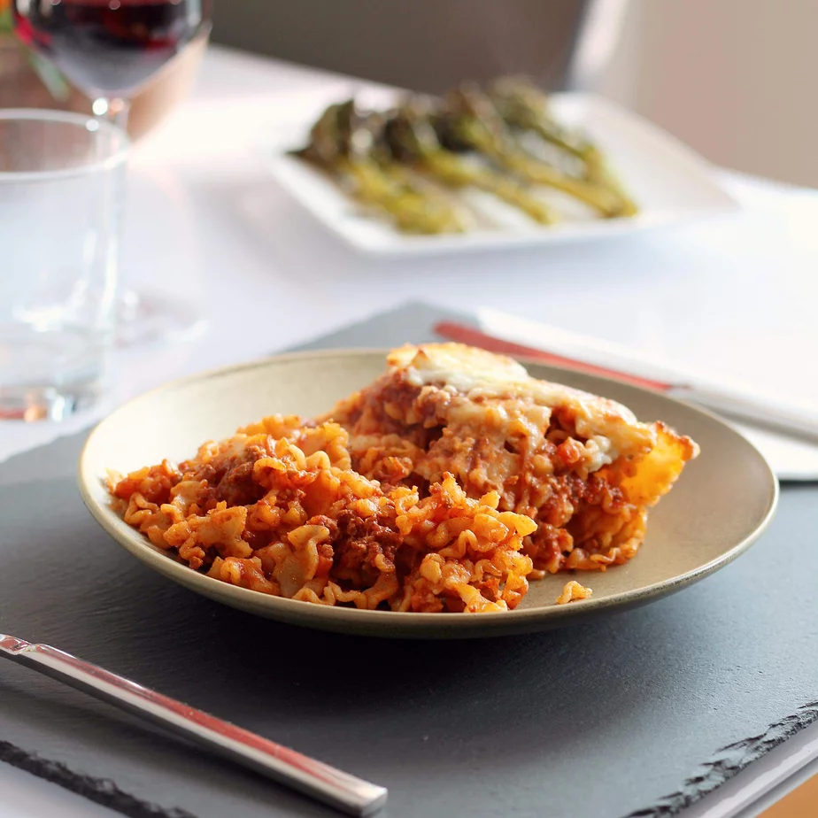

Lasanga

Delicous Lasanga
So, you always wanted to make a great nutritous lasanga and just didnt know how?
good news! today is the last day you'll need to search for the perfect recipe.
Here's all the ingredients you'll need for this dish:
ingredients
- 1/2 pound ground beef
- 1/2 (28 ounce) jar spaghetti sauce
- 1 (14.5 ounce) can diced tomatoes
- 1/2 onion, chopped
- 1 clove garlic, minced
- 2 teaspoon dried oregano (optional)
- 1 teaspoon salt
- 1 teaspoon black pepper
- 2 cups dried malfada noodles
- 1 cup shredded mozzarella cheese
Steps
-
Heat a large skillet over medium-high heat.
Cook and stir beef in the hot skillet until browned and crumbly,
5 to 7 minutes. Drain and discard grease. Add spaghetti sauce,
tomatoes, onion, garlic, basil, oregano, salt, and pepper.
Cook over low heat until sauce is hot, about 15 minutes.
-
Meanwhile, fill a large pot with lightly salted
water and bring to a rolling boil. Cook mafalda noodles at a
boil until tender yet firm to the bite, about 8 minutes. Drain.
- Add cooked and drained noodles to the sauce
and stir until completely coated.
Sprinkle mozzarella cheese on top.
- Set an over rank about 6 inches from the heat source and
preheat the oven's broiler.
- Place skillet under the hot broil and cook until cheese is golden
and bubbly, 3 to 5 minutes.